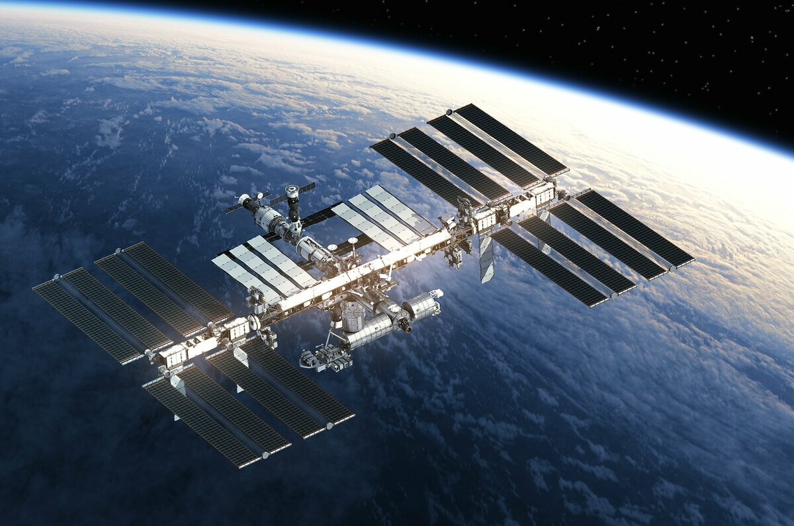

Международная космическая станция (МКС)
Междунаро́дная косми́ческая ста́нция, сокр. МКС — пилотируемая орбитальная станция, используемая
как многоцелевой космический исследовательский комплекс; эксплуатируется с конца 1998 года по
настоящее время (странами согласована эксплуатация по 2024 год включительно, рассматривается
продление срока работы до 2028 или 2030 года). МКС — совместный международный проект, в котором
участвуют 14 стран: Россия, США, Япония, Канада и входящие в Европейское космическое агентство
Бельгия, Германия, Дания, Испания, Италия, Нидерланды, Норвегия, Франция, Швейцария, Швеция
(первоначально в составе участников были Бразилия и Великобритания).
МКС внесена в Книгу рекордов Гиннесса как самый дорогой объект, построенный человеком. Общая
стоимость создания станции составляет более 150 миллиардов долларов.
Управление МКС осуществляется: российским сегментом — из Центра управления космическими полётами
в Королёве, американским сегментом — из Центра управления полётами имени Линдона Джонсона в
Хьюстоне. Управление лабораторных модулей — европейского «Коламбус» и японского «Кибо» —
контролируют Центры управления Европейского космического агентства (Оберпфаффенхофен, Германия)
и Японского агентства аэрокосмических исследований (г. Цукуба). Между Центрами идёт постоянный
обмен информацией.
В 1984 году Президент США Рональд Рейган объявил о начале работ по созданию международной
орбитальной станции; в 1988 году проектируемая станция была названа «Freedom» («Свобода»). В то
время это был совместный проект США, ЕКА, Канады и Японии. Планировалась крупногабаритная
управляемая станция, модули которой будут доставляться по очереди на орбиту кораблями «Спейс
шаттл» с 1981 года. Но к началу 1990-х годов выяснилось, что стоимость разработки проекта
слишком велика, и было принято решение создать станцию совместно с Россией.
Россия, унаследовавшая от СССР опыт создания и выведения на орбиту орбитальных станций «Салют»
(1971—1991), а также станции «Мир» (1986—2001), планировала в начале 1990-х создание станции
«Мир-2», но в связи с экономическими трудностями проект был приостановлен.
17 июня 1992 года Россия и США заключили соглашение о сотрудничестве в исследовании космоса. В
соответствии с ним Российское космическое агентство (РКА) и НАСА разработали совместную
программу «Мир — Шаттл». Эта программа предусматривала полёты американских многоразовых кораблей
«Спейс шаттл» к российской космической станции «Мир», включение российских космонавтов в экипажи
американских шаттлов и американских астронавтов — в экипажи кораблей «Союз» и станции «Мир».